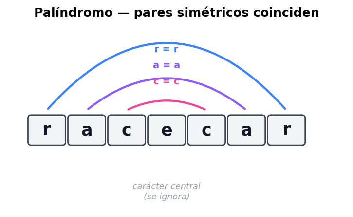
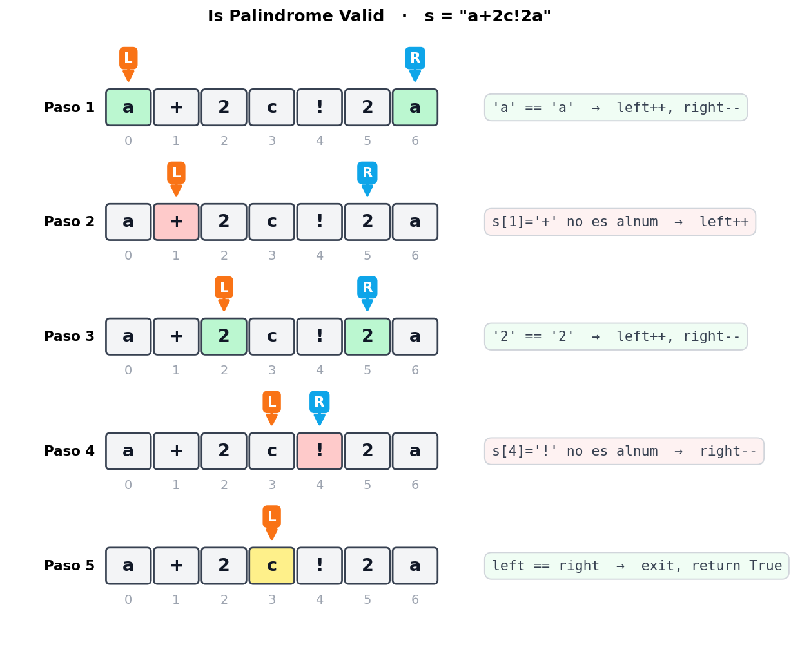
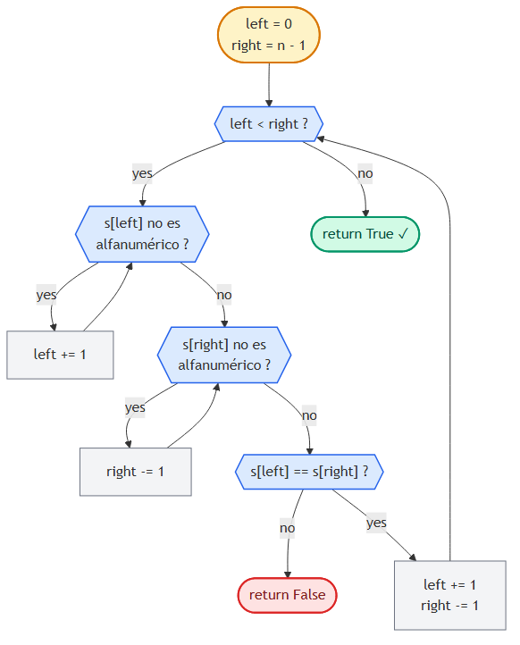

Is Palindrome Valid
📍 Two Pointers · Problema 4/6 · ⬅ Largest Container · 🏠 Chapter · Shift Zeros ➡ · 📚 KB Index
TL;DR — Verificar si un string es palíndromo ignorando caracteres no alfanuméricos. Two pointers desde los extremos: si ambos son alfanuméricos y coinciden, ambos avanzan al centro; si no coinciden, no es palíndromo. Skip de no-alfanuméricos antes de comparar. O(n) tiempo, O(1) espacio.
📑 In this entry¶
- 🎓 For Dummies — empezá por acá
- Problema
- Qué es un palíndromo (con simetría)
- Estrategia: dos punteros que se encuentran en el medio
- Manejo de caracteres no alfanuméricos
- Trace paso a paso
- Decision flowchart
- Implementación
- Complexity Analysis
- Test Cases
- ⭐ Amplification: variantes y casos especiales
- ⚠️ Pitfalls
- Interview Tips
🎓 For Dummies — empezá por acá¶
Analogía: un palíndromo es una palabra-espejo. Se lee igual de izquierda a derecha y de derecha a izquierda. Ejemplos: racecar, neuquen, anita lava la tina, arribaba la birra.
Imaginá la palabra escrita en una hoja, y doblás la hoja por la mitad: si todas las letras de cada lado se superponen perfectamente, es palíndromo.
¿Cómo lo verificás algorítmicamente? Poneé un dedo al principio y otro al final:
- ¿La letra de la izquierda y la de la derecha son la misma? Sí → ambos dedos hacia adentro un paso.
- ¿No coinciden? → no es palíndromo, terminás.
- ¿Los dedos se cruzaron? → revisaste todo, sí es palíndromo.
¿Y los espacios y signos de puntuación? Los ignorás. La frase "a dog! a panic in a pagoda." es palíndromo porque solo contando letras y números queda adogapanicinapagoda ↔ adogapanicinapagoda. Cuando un dedo cae en un signo, simplemente lo saltás (movés el dedo un paso más).
Trampas comunes¶
- ⚠️ Olvidar la condición
left < rightdentro de los while-skips. Si el string es puro signos ("!?,."),leftpuede pasarse deright. Si no chequeás, intentás comparar índices invertidos. - ⚠️ Comparar con sensibilidad a mayúsculas.
"Aa"¿es palíndromo? Depende del enunciado. La mayoría de variantes piden case-insensitive, pero siempre preguntá. En el código se resuelve con.lower()o usandoCharacter.toLowerCase(). - ⚠️ Pensar que “no alfanuméricos” significa “solo espacios”. No: incluye signos de puntuación, emojis, acentos según el enunciado. Regex
[a-zA-Z0-9](JS) ochar.IsLetterOrDigit(C#) cubre letras + dígitos. Si el problema permite Unicode con acentos, depende de la implementación del lenguaje.
¿Listo para la versión completa? ⬇️
Problema¶
Dado un string, determiná si es palíndromo después de eliminar todos los caracteres no alfanuméricos. Un carácter es alfanumérico si es una letra o un número.
Ejemplo 1¶
Input: s = "a dog! a panic in a pagoda."
Output: True
Explicación: ignorando espacios y signos queda "adogapanicinapagoda",
que se lee igual al revés.
Ejemplo 2¶
Input: s = "abc123"
Output: False
Explicación: ignorando signos queda "abc123", que al revés es "321cba" ≠ "abc123".
Constraints¶
El string puede incluir letras inglesas en minúscula, números, espacios y puntuación.
Qué es un palíndromo (con simetría)¶
Un palíndromo se lee igual de adelante hacia atrás:
"racecar" ─reverse─► "racecar" ✓
La propiedad clave: el primer carácter es igual al último, el segundo al penúltimo, etc. Visualmente, los pares simétricos coinciden:

Cuando la longitud es impar, hay un carácter central que se compara consigo mismo (no afecta la decisión, lo podemos saltear). Cuando es par, los dos punteros se cruzan sin coincidir, lo que también es señal de éxito.
Estrategia: dos punteros que se encuentran en el medio¶
Two pointers inward traversal es el match perfecto para esto:
left right
▼ ▼
[ a b c d c b a ]
^
(después de varias iteraciones,
los dos llegan al medio)
Lógica básica (sin considerar signos):
left = 0,right = len(s) - 1.- Mientras
left < right: - Si
s[left] != s[right]→ no es palíndromo, returnFalse. - Si
s[left] == s[right]→left++,right--. - Si salimos del while sin returnear
False→ returnTrue.
Manejo de caracteres no alfanuméricos¶
Como hay que ignorar signos y espacios, antes de comparar, avanzamos los punteros hasta que ambos apunten a un carácter alfanumérico:
Skip desde la izquierda:
while s[left] no es alfanumérico:
left += 1
Skip desde la derecha:
while s[right] no es alfanumérico:
right -= 1
⚠️ Cuidado con los bordes: mientras hacés skip, podés pasarte. Si el string es "!?,." (puros signos), left pasaría de right. Por eso los while internos siempre llevan también left < right:
while (left < right && !isAlnum(s[left])) left++;
while (left < right && !isAlnum(s[right])) right--;
Trace paso a paso¶
Ejemplo: s = "a+2c!2a" (versión compacta, sin espacios).

Resultado: True. El string, ignorando signos, es a2c2a, que es palíndromo.
Decision flowchart¶

Implementación¶
JavaScript¶
function isPalindromeValid(s) {
const isAlnum = (c) => /[a-zA-Z0-9]/.test(c);
let left = 0, right = s.length - 1;
while (left < right) {
// Skip caracteres no alfanuméricos desde la izquierda.
while (left < right && !isAlnum(s[left])) left++;
// Skip caracteres no alfanuméricos desde la derecha.
while (left < right && !isAlnum(s[right])) right--;
// Comparar caracteres alfanuméricos.
if (s[left] !== s[right]) return false;
left++;
right--;
}
return true;
}
C¶
public bool IsPalindromeValid(string s) {
int left = 0, right = s.Length - 1;
while (left < right) {
// Skip caracteres no alfanuméricos desde la izquierda.
while (left < right && !char.IsLetterOrDigit(s[left])) left++;
// Skip caracteres no alfanuméricos desde la derecha.
while (left < right && !char.IsLetterOrDigit(s[right])) right--;
// Comparar caracteres alfanuméricos.
if (s[left] != s[right]) return false;
left++;
right--;
}
return true;
}
Nota sobre case-sensitivity: el enunciado original asume todo lowercase. Si el problema permite mayúsculas, agregá
.toLowerCase()(JS) ochar.ToLower()(C#) al comparar, o normalizá el string al inicio.
Complexity Analysis¶
| Métrica | Valor | Por qué |
|---|---|---|
| Tiempo | O(n) | Cada carácter del string se visita a lo sumo una vez (sea por left o por right). Los while-skips internos no convierten esto en O(n²) porque cada skip avanza un puntero que nunca retrocede. |
| Espacio | O(1) | Solo variables left y right. No allocamos arrays auxiliares. |
Por qué los while anidados NO son O(n²): parece que tenés un while afuera y dos while adentro, pero la suma total de iteraciones de todos los whiles es ≤ n. Cada paso adelante de
left(o atrás deright) cuenta como una iteración total — el costo se amortiza.
Comparación con la versión naive¶
| Approach | Tiempo | Espacio | Notas |
|---|---|---|---|
| Filtrar + reversed comparison | O(n) | O(n) | Crear string filtrado y compararlo con su reverso. Más fácil de leer pero usa memoria extra. |
| Two pointers | O(n) | O(1) | Misma performance, espacio constante. Preferida en entrevista. |
// Versión naive (educativa, NO óptima en espacio):
function isPalindromeNaive(s) {
const filtered = s.toLowerCase().replace(/[^a-z0-9]/g, "");
return filtered === [...filtered].reverse().join("");
}
Test Cases¶
| Input | Expected | Descripción |
|---|---|---|
"" |
True |
String vacío: trivialmente palíndromo. |
"a" |
True |
Un solo carácter. |
"aa" |
True |
Palíndromo de longitud par mínima. |
"ab" |
False |
Dos caracteres distintos. |
"!,(?)" |
True |
Solo signos: queda “” → palíndromo. |
"12.02.2021" |
True |
Palíndromo con números: 12022021 ↔ 12022021. |
"21.02.2021" |
False |
No-palíndromo con números. |
"hello, world!" |
False |
Frase normal no-palíndromo. |
"A man, a plan, a canal: Panama" |
True* |
Caso clásico — requiere case-insensitive. |
"a dog! a panic in a pagoda." |
True |
Caso del enunciado. |
"race a car" |
False |
Casi palíndromo. |
Para
"A man, a plan, a canal: Panama"el enunciado de este ejercicio asume lowercase, así que con la implementación de arriba devolvería False* (porque'A' != 'a'). Hay que normalizar a lowercase si el problema lo permite.
⭐ Amplification: variantes y casos especiales¶
Variante 1: Valid Palindrome II (LeetCode #680)¶
“Podés borrar a lo sumo un carácter. ¿Podés volverlo palíndromo?”
Idea: cuando los dos punteros no coinciden, probás dos opciones: saltarte left o saltarte right. Si alguna de las dos vuelve palíndromo lo que queda, devolvés True.
function validPalindromeII(s) {
const isPal = (l, r) => {
while (l < r) {
if (s[l] !== s[r]) return false;
l++; r--;
}
return true;
};
let left = 0, right = s.length - 1;
while (left < right) {
if (s[left] !== s[right]) {
// Probar saltar uno de los dos lados.
return isPal(left + 1, right) || isPal(left, right - 1);
}
left++; right--;
}
return true;
}
Sigue siendo O(n) tiempo (en el peor caso una sola “branch” extra).
Variante 2: Longest Palindromic Substring (LeetCode #5)¶
Esto NO es two pointers puro — es expand around center: para cada índice i, intentás expandir un palíndromo desde el centro hacia afuera. Lo incluyo porque suele aparecer como follow-up.
function longestPalindrome(s) {
const expand = (l, r) => {
while (l >= 0 && r < s.length && s[l] === s[r]) {
l--; r++;
}
return s.slice(l + 1, r);
};
let best = "";
for (let i = 0; i < s.length; i++) {
// Centro impar (un solo char) y par (dos chars).
for (const cand of [expand(i, i), expand(i, i + 1)]) {
if (cand.length > best.length) best = cand;
}
}
return best;
}
Tiempo O(n²), espacio O(1). Para O(n) verdadero hay que mirar algoritmo de Manacher, pero rara vez se pide en entrevistas.
Variante 3: palindrome ignorando solo case (sin signos)¶
Si te dicen “todos los caracteres cuentan, solo ignorá case”, sacás los while-skips y dejás solo:
function isPalindromeCaseInsensitive(s) {
let left = 0, right = s.length - 1;
while (left < right) {
if (s[left].toLowerCase() !== s[right].toLowerCase()) return false;
left++; right--;
}
return true;
}
Variante 4: linked list palindrome¶
Para una linked list no podés indexar, así que cambia el approach:
- Encontrar el medio (slow/fast pointers — ver Cap. 4).
- Reverse la segunda mitad in-place.
- Comparar la primera mitad con la segunda mitad reversed.
O(n) tiempo, O(1) espacio.
Follow-ups típicos¶
- “¿Y si el string es muy largo y solo tenés streaming?” — No podés hacer two pointers porque no podés moverte hacia atrás. Hay que parsear hacia adelante y guardar todo (O(n) espacio).
- “¿Y si querés ignorar también los caracteres acentuados?” — Normalizar primero (
s.normalize("NFKD").replace(/[̀-ͯ]/g, "")en JS;s.Normalize(NormalizationForm.FormD)+ filtrar combining marks en C#).
⚠️ Pitfalls¶
- Olvidar
left < rightdentro de los while-skips. Sin esa guarda, en strings con puros signos te pasás de los bordes y rompés. - Asumir que el input es ya lowercase. Aclarar con el entrevistador. Si no lo es, normalizar.
- No considerar string vacío.
""es palíndromo por convención. Algunas tests lo verifican. - Hacer dos pasadas (filtrar + reversar) cuando la consigna pide O(1) espacio.
- Confundir “alfanumérico” con “letra”. “Alfanumérico” incluye dígitos (regex
[a-zA-Z0-9]ochar.IsLetterOrDigit); “letra” no ([a-zA-Z]ochar.IsLetter). Lee bien el problema. - No saltarse el medio en longitudes impares. En realidad no hace falta saltarlo: cuando
left == rightse sale del while sin compararlo, así que está cubierto naturalmente.
Interview Tips¶
Tip 1 — Aclará constraints antes de tipear.
- ¿Hay caracteres no alfanuméricos? ¿Cómo los trato?
- ¿Hay diferencia entre mayúsculas y minúsculas?
- ¿Hay Unicode / acentos / emojis?
- ¿Qué devuelvo para
""?
Tip 2 — Confirmá el uso de built-ins.
Regex /[a-zA-Z0-9]/ (JS) o char.IsLetterOrDigit() (C#) — son azúcar que vale la pena. Pero el entrevistador puede pedirte implementarla a mano:
function isAlnum(c) {
return (c >= 'a' && c <= 'z') || (c >= 'A' && c <= 'Z') || (c >= '0' && c <= '9');
}
bool IsAlnum(char c) =>
(c >= 'a' && c <= 'z') || (c >= 'A' && c <= 'Z') || (c >= '0' && c <= '9');
Mostrar que sabés cómo está construida (rangos ASCII) suma puntos.
Tip 3 — Habla de la invariante. Decí: “En cada iteración, todo lo de afuera de [left, right] ya fue verificado y matchea. Si llego al centro sin contradicción, todo el string es palíndromo.” Eso muestra que entendés por qué funciona, no solo que lo memorizaste.
Tip 4 — Si el follow-up es “implementá isAlnum por tu cuenta”, no entres en pánico.
Es un check de char ranges. Tres comparaciones encadenadas con or.
References¶
- LeetCode — #125 Valid Palindrome
- LeetCode — #680 Valid Palindrome II (con eliminación de un carácter)
- LeetCode — #5 Longest Palindromic Substring (follow-up)
- Coding Interview Patterns — capítulo “Two Pointers” → “Is Palindrome Valid”
- Entradas relacionadas:
- Introduction to Two Pointers
- Pair Sum - Sorted (otro inward traversal)
📍 Two Pointers · Problema 4/6 · ⬅ Largest Container · 🏠 Chapter · Shift Zeros ➡ · 📚 KB Index